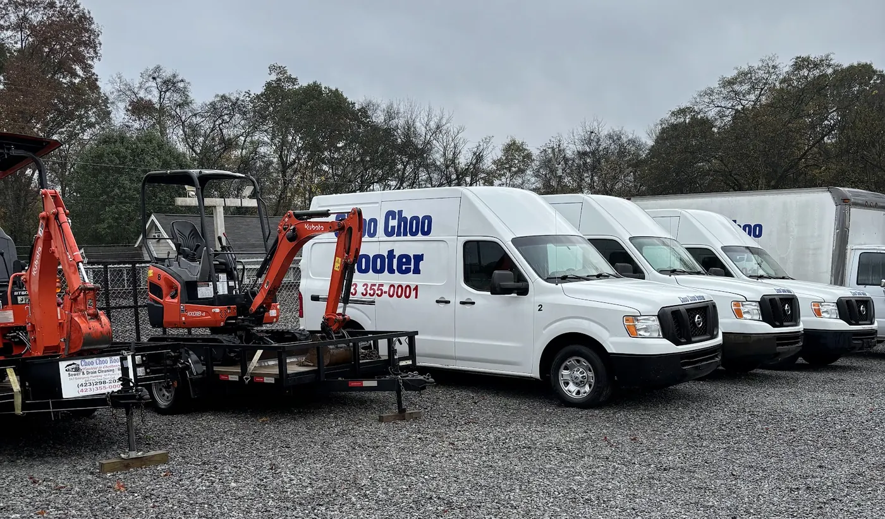
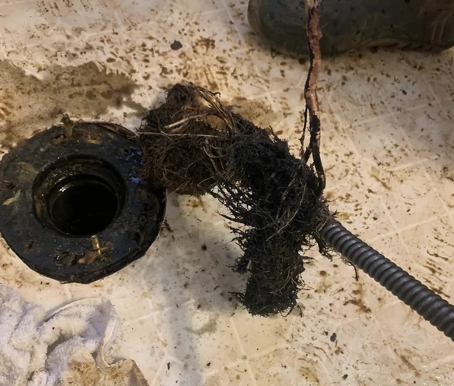
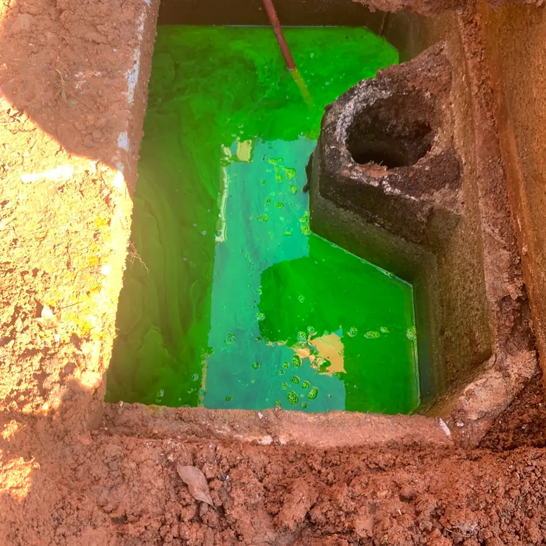
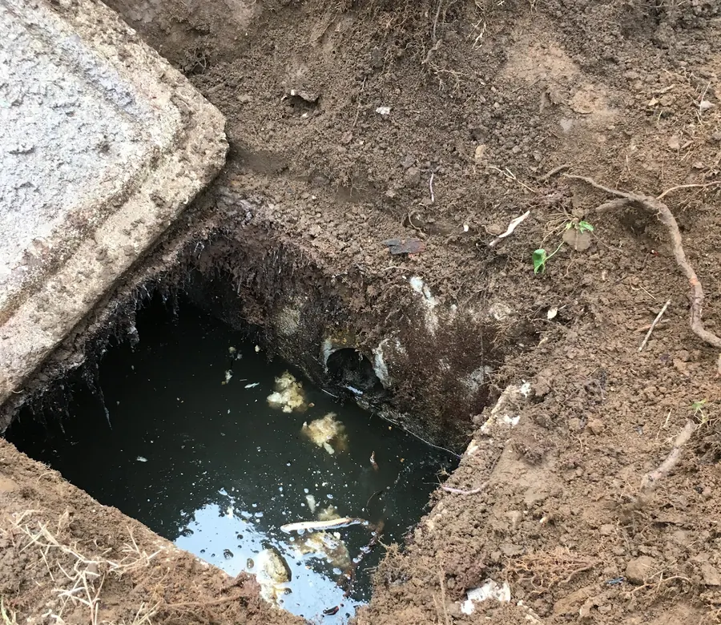

Sale Creek · Chattanooga and surrounding areas
Drain clogged? Sewer backed up? We can help!
Drain cleaning, plumbing and septic work, day or night. Somebody answers the phone.
10% off for veterans and seniors.
What’s going on?
Pick the closest one. It opens a short form that tells the crew what they’re walking into, how bad it is, and lets you send a photo. If water is coming up right now, skip the form and call.
Get a second opinion before you sign anything
The pattern in their reviews: another company quotes a new septic system or a whole new line, and Choo Choo Rooter finds the actual problem.
Quoted elsewhere: $40,000 and two weeks out of the house
“had another company come out to quote me for what would be 40,000 dollars for a whole new septic tank … it was a SINPLE CLOG”
Quoted elsewhere: $5,000 for a new pump
“Jack came out to look at my issue. He quickly identified the actual problem and fixed my pump within a few hours. … It all made sense and was a fraction of the price I was quoted previously.”
Quoted elsewhere: $8,000 for a new septic system
“I then called Choo Choo Rooters for a 2nd opinion. They came out immediately and fixed my problem in 45 minutes for an amazing price!!”
Quoted elsewhere: $3,500 to replace a sink drain line
“Within an hour, they had the drain line cleared and working better than it has in months.”
Already have a quote from someone else? Put it in the form and ask for a second look.
The work, from their own phone



Open 24/7
24/6 with live response on Sundays. Holidays included, by the sound of their reviews.
(423) 355-0001“Night before Thanksgiving we had our kitchen sink back up. Nightmare! Called several places that never called me back. Called Choo Choo Rooters around 7:30pm (last night) and they answered and scheduled job Thanksgiving morning (today).”
What customers say
“Had a septic issue. Phillip showed up within 30min of call and found the problem quickly. Needed a jet cleaning of the septic drain line. Overall it was less than a 1hour fix and I no longer have septic overfilling into my basement.”
“After providing the quote the Choo Choo Rooter crew discovered that practically anything that could have been done wrong regarding the septic system was done so by the original builder. This amounted to additional work for his crew. Nevertheless he didn't waiver from the initial quote despite the extra labor involved.”
“Phillip Facetimed me and walked me through how to restart the pilot flame, and got it running again.”